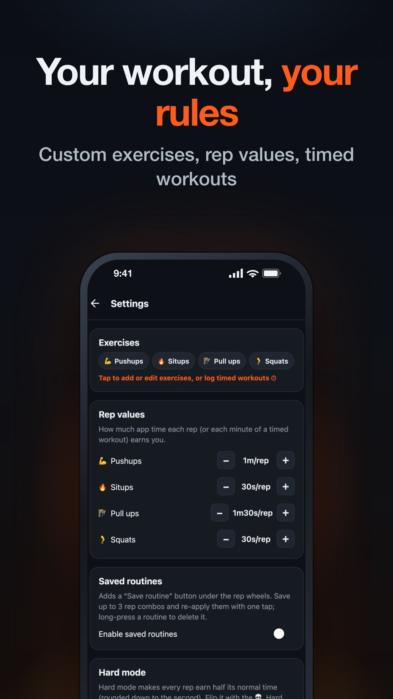

Bloquea YouTube hasta que te lo hayas ganado
YouTube es donde muchos aprendemos cosas: cómo arreglar una bici, una charla que te perdiste, un tutorial de programación. Eso es lo que lo hace difícil de bloquear. Bloquear TikTok es fácil de justificar. Bloquear YouTube también bloquea la mitad útil, así que haces una excepción, y luego la excepción se vuelve el hábito.
Ahí es donde un bloqueador que se desbloquea con ejercicio queda mejor que un bloqueo duro. Siempre puedes entrar, pero te cuesta algo.
Dónde te atrapa YouTube
- La reproducción automática y “A continuación”. El video que querías ver muchas veces es el primero de cinco. El siguiente empieza antes de que hayas decidido nada.
- Shorts. Es el mismo feed sin fondo que TikTok, con su propia pestaña dentro de una app que abriste para otra cosa.
- La página de inicio. Abres la app para buscar una cosa, y las recomendaciones te alcanzan antes que la barra de búsqueda.
- Se siente productivo. Ver un documental se siente más valioso que hacer scroll, así que es más fácil justificar otra hora.
Nada de esto significa que YouTube sea malo. Significa que la sesión que planeas y la que de verdad tienes suelen durar cosas muy distintas.
Bloquea YouTube en iPhone
- Abre HonorFit, toca Continuar para darle acceso a Tiempo de uso y aprueba el aviso de Apple.
- Toca Apps a bloquear › Abrir selector de apps y marca YouTube. Marca la app en sí, no una categoría completa, para no bloquear sin querer otras apps con las que ves o escuchas cosas.
- Deja YouTube Music sin marcar si quieres que siga libre. Es otra app, así que bloquear YouTube no le afecta.
En iPhone, el tiempo ganado lo mide Tiempo de uso de Apple: el saldo solo baja mientras YouTube está en pantalla de verdad. Sigue funcionando aunque HonorFit esté cerrado.
Bloquea YouTube en Android
- Concede los dos permisos de la tarjeta Permisos necesarios de HonorFit: Acceso a datos de uso, para que vea qué app está abierta, y Mostrar sobre otras apps, para que pueda dibujar la pantalla de bloqueo.
- Pon el uso de batería en Sin restricciones en Ajustes › Funcionamiento en segundo plano. Esto importa en celulares de marcas que detienen las apps en segundo plano de forma agresiva.
- En Apps a bloquear, busca “YouTube” y márcala. La lista muestra todas las apps instaladas, así que vas a ver YouTube, YouTube Music y YouTube Kids por separado y puedes elegir solo la que quieres.

Un tipo de cambio para videos largos
Aquí YouTube es distinto de las otras apps. Una sesión de TikTok son clips de 15 segundos. Un video de YouTube puede durar 25 minutos, así que el tipo de cambio que pongas tiene que alcanzar para un video entero, no solo para unos minutos de scroll.
- Las dominadas valen más. Por defecto, cada una te da 90 segundos, así que 10 dominadas compran 15 minutos. Si tienes una barra en una puerta, es la forma más rápida de ganar tiempo.
- Puedes combinar ejercicios en las ruedas. 10 flexiones (10 minutos) más 20 sentadillas (10 minutos) te dan 20 minutos en un solo registro.
- Un saldo gratis llega hasta 2 horas. Eso alcanza para un video largo o dos. Ganarte una noche entera de documentales tampoco es la idea. Son el tipo de cosa que deberías sentarte a elegir ver.
Si los videos largos son gran parte de lo que ves, registra también entrenamientos por tiempo (gratis). Por defecto, una hora de correr o de gimnasio te da 30 minutos. Y si 2 horas de tiempo guardado no te alcanzan, Pro quita el tope. Cambiar un buen entrenamiento por un buen video parece un trato justo.
Dos consejos específicos para YouTube
- Cierra la app cuando pauses. HonorFit mide el tiempo mientras YouTube está en pantalla, y un video en pausa en pantalla sigue contando. Si te cambias de app, el reloj se detiene.
- Busca antes de abrir la app. Si ya sabes qué quieres ver, búscalo en tu navegador y abre el resultado en YouTube. Te saltas por completo la página de inicio, y tus minutos ganados se van en el video que de verdad querías ver.
HonorFit solo cubre tu celular. YouTube en una tele o una laptop, o en el navegador de tu celular (o móvil), no es algo que controle. Si ahí es donde ves la mayor parte, un bloqueador para el celular no lo va a arreglar.
HonorFit Blocker bloquea YouTube hasta que te ganes el tiempo con dominadas, flexiones, abdominales o sentadillas. Gratis en iPhone y Android. Sistema de honor, sin cámara y nada sale de tu celular.